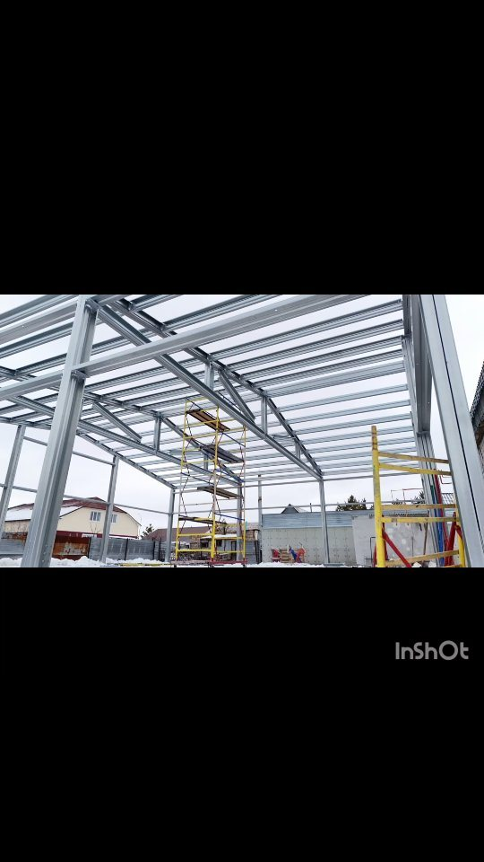

Фундамент под ангар: сваи против бетона
Фундамент — та часть стройки, где чаще всего теряют время и деньги: земляные работы, опалубка, бетон, ожидание набора прочности. Лёгкий стальной каркас позволяет уйти от этого почти полностью — на винтовые сваи с металлическим ростверком. Разбираем, когда это работает и когда без бетона всё же не обойтись.
Винтовые сваи + металлический ростверк: без бетона
Сваи завинчиваются в грунт, поверх собирается металлический ростверк на болтовых соединениях — и на него сразу опирается каркас. Ни опалубки, ни арматурных работ, ни заливки. Так устроен фундамент наших зернохранилищ нового поколения — и он же подходит для ангаров и складов на ЛСТК.

Сравнение: сваи с ростверком против ленты и плиты
| Параметр | Винтовые сваи + ростверк | Бетонная лента / плита |
|---|---|---|
| Мокрые процессы | нет — только механический монтаж | опалубка, арматура, заливка, уход за бетоном |
| Сезонность | круглый год, включая зиму | тёплый сезон или зимнее удорожание: прогрев, добавки |
| Готовность под каркас | сразу после сборки ростверка | после набора прочности бетона — до 28 суток |
| Демонтаж и перенос | конструкция разборная — актив можно перевезти | практически невозможен |
| Состав затрат | сваи, ростверк, монтаж | земляные работы, опалубка, арматура, бетон, доставка миксерами |
Когда лента или плита всё же нужны
Сваи — не универсальный ответ. Есть задачи, где бетонный фундамент обоснован расчётом, и честный проектировщик скажет об этом прямо:
- 01 Крановые нагрузки: цех с кран-балкой передаёт на основание большие сосредоточенные усилия — под тяжёлый каркас из чёрного металла часто нужны монолитные фундаменты
- 02 Тяжёлое технологическое оборудование с собственными фундаментами и виброизоляцией
- 03 Сложные грунты по данным геологии — решение принимается по расчёту, а не по привычке
- 04 Технологические полы под проезд техники внутри здания — это отдельная конструкция: бетонный пол по грунту совместим со свайным фундаментом каркаса
Важно: выбор «сваи или бетон» — не вопрос вкуса. Это результат сбора нагрузок в разделе КМ и данных о грунте вашей площадки.
Задание на фундамент — в составе проекта
Вместе с разделом КМ вы получаете задание на фундамент: опорные реакции каркаса, схему расположения точек опирания и анкерных болтов, узлы опирания. Это документ, по которому любой подрядчик выполнит фундамент без «додумывания» — а завод гарантирует, что каркас встанет на него без подгонки.
Можно и проще: передайте фундамент нам вместе с каркасом — спроектируем, смонтируем сваи с ростверком и сдадим под монтаж в рамках одного договора.
Подберём фундамент под ваше здание и грунт
Пришлите назначение и габариты здания — инженер посчитает каркас, нагрузки на основание и предложит вариант фундамента: сваи или бетон, по расчёту, а не по привычке.